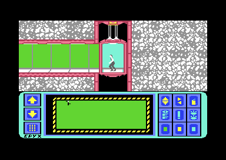
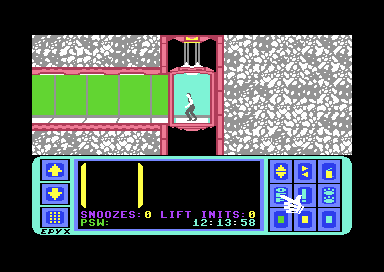

<meta charset="utf-8">
<meta name="viewport" content="width=device-width, initial-scale=1">
<title>Impossible Mission</title>
<link rel="preconnect" href="https://fonts.googleapis.com">
<link rel="stylesheet" href="https://fonts.googleapis.com/css2?family=Lato:wght@400;700;900&family=IBM+Plex+Mono:wght@400;500&display=swap">
<link rel="stylesheet" href="reference/impossible-mission-page.css">
<!-- tabs -->
<header class="hero">
  <p class="eyebrow">Commodore 64 · 1984 · Epyx</p>
  <h1>Impossible Mission</h1>
  <p class="sub">Dennis Caswell's stronghold is rebuilt for every game: the map, the robots' behaviour, the password and the puzzle pieces are rolled when a game starts. Two copy-protection checks keep running while you play.</p>
</header>
<main class="wrap">
<section id="game">
  <p class="fig">01 · The game</p>
  <h2 class="t">Find nine letters of a password before six o'clock</h2>
  <p>You play a secret agent inside the stronghold of Professor Elvin Atombender. It is 32 rooms joined by lift shafts and corridors. Robots patrol the rooms, and six of them also hold a floating black ball. Touch either and you die. A death costs ten minutes, and the clock runs from twelve o'clock to six.</p>
  <p>The rooms are full of furniture. Stand in front of a piece and push up to search it. Hidden among 128 pieces of furniture are 36 puzzle pieces and 18 passwords. A snooze password stops a room's robots for a while, and a lift-init password puts its lifting platforms back where they started. Both are used at the security terminals.</p>
  <p>Every four puzzle pieces make one picture. You put them together on a pocket computer, which you can open only in a lift or a corridor. Each finished picture gives one letter of a nine-letter password, and the whole password opens Elvin's control room.</p>
  <div class="shots">
    <figure><figcaption>The start: the agent waits in a lift until fire is pressed. The panel below is the pocket computer. Captured in an emulator.</figcaption></figure>
    <figure><figcaption>A room: floors, furniture to search, striped lifting platforms and robots.</figcaption></figure>
    <figure><figcaption>The pocket computer, where pieces are flipped, recoloured and put together.</figcaption></figure>
  </div>
</section>

<section id="release">
  <p class="fig">02 · The release</p>
  <h2 class="t">Ten months of work, an idea from <i>WarGames</i>, and a title chosen to sound like <i>Mission: Impossible</i></h2>
  <p>Epyx published <i>Impossible Mission</i> for the Commodore 64 in 1984. The company had started in 1978 as Automated Simulations, founded by Jim Connelley and Jon Freeman to sell tactical combat games, and took the name of its action label, Epyx, in 1983. In 1984 it also published <i>Summer Games</i>, timed for the Los Angeles Olympics, and <i>Pitstop II</i>.</p>
  <p>Dennis Caswell came to Epyx when it bought Starpath, the maker of the Supercharger add-on for the Atari 2600, for which he had written <i>Phaser Patrol</i> and <i>Escape from the MindMaster</i>. By his account the game took about ten months. The idea came from the film <i>WarGames</i>: an agent breaking into a complex run by a computer. The running man was the first thing he made, drawn on graph paper and typed into the program as hex by hand. The game went untitled for a long time. "The choice of a name was delayed as long as possible," Caswell said, "and <i>Impossible Mission</i> was more resorted to than chosen. It was, at least, somewhat descriptive, and the obvious allusion to <i>Mission: Impossible</i> was expedient, to the extent that both the game and the TV show involved high-tech intrigue."</p>
  <p>The voice came from Electronic Speech Systems. Caswell asked for a fiftyish Englishman, like a James Bond villain, and the company had one on its staff; Caswell never met him. The story goes that ESS raised its prices once the game had shown what its speech could do, and that Epyx did not use it again. In Britain it first came out on CBS Software's label, at £8.95 on cassette and £11.95 on disk; by the end of 1985 US Gold was selling it at £9.95 and £12.95. No American price turned up.</p>
</section>

<section id="reception">
  <p class="fig">03 · Reception</p>
  <h2 class="t">C&amp;VG's Game of the Month, and number one in Zzap!64's first readers' chart</h2>
  <p>British magazines took it up in the spring of 1985. <a href="https://archive.org/details/ComputerAndVideoGamesIssue042Apr85">Computer &amp; Video Games</a> made it Game of the Month in its April 1985 issue, with 9 for graphics, 10 for sound, 9 for value and 10 for playability. The reviewer called it "simply one of the best computer games I have ever played", praised "some of the most astonishing voice synthesis ever produced on a home computer", and wrote that "it would be a huge injustice if this game didn't reach number one and stay there for a very long time".</p>
  <p>Zzap!64 started in May 1985, after the game was out, so <a href="https://archive.org/details/ZZap64Issue0011985May">its first issue</a> did not review it. It used it instead for the Zzap Challenge, the contest for the magazine's first champion. Julian Rignall had all 36 pieces by 4.09 pm, reached Elvin at 4.28 and scored 16,193; Bob Wade ran out of time with 33 pieces. The same issue printed Gary Penn's guide to the robots, sorted into the ones that stand still, the "lazy droids", and the ones that move. In <a href="https://archive.org/details/ZZap64Issue0021985Jun">the next issue</a>, the magazine's first readers' chart put <i>Impossible Mission</i> at number one, with 25.9 % of the votes.</p>
  <p>Commodore User's yearbook, <a href="https://archive.org/details/Commodore_User_Screen_Stars_of_1985"><i>Screen Stars of 1985</i></a>, reckoned that a poll for the gamer's pick of the year "would be Impossible Mission", called its animation, graphics and speech unparalleled, and ended with a plea: "Come on you Yanks — how about an Impossible Mission II." American magazines came back to it for years. <a href="https://archive.org/details/1986-06-computegazette">Compute!'s Gazette</a> in June 1986 called Caswell "one of those rare people who has all the skills necessary to create and design an outstanding game". In May 1988 <a href="https://archive.org/details/1988-05-compute-magazine">COMPUTE!</a> listed it among its favourite games: "one of this game's guilty pleasures is to send your character hurtling repeatedly into the abyss just for the sound effects."</p>
  <p>Epyx did make a sequel: <i>Impossible Mission II</i> came out in 1988, the year the original came back as a budget re-release on Mastertronic's Ricochet label. Ports ran from 1985 to 1990, for the Apple II, ZX Spectrum, Amstrad CPC, BBC Micro, Acorn Electron, Atari 7800 and Master System; Console XS rated the Master System version 89 % in 1992. In 2004 Retro Gamer's readers voted the original 45th among the best games of all time. System 3 remade it for the PSP, DS and Wii, and later the Switch, and the C64 version was sold again on the Wii's Virtual Console from 11 April 2008 and on Evercade's TheC64 Collection 1 cartridge. In 2022 Stuff put it among the ten best Commodore 64 games and TheGamer called it "the first game that ever scared me". <i>Impossible Mission 3</i>, a new Commodore 64 game, was released on 18 May 2026.</p>
  <p class="overview-note">The magazine quotes and figures are from the scans linked above, on the Internet Archive, read on 6 October 2026. Console XS, System 3's remake, Stuff and TheGamer are from the citations in <a href="https://en.wikipedia.org/wiki/Impossible_Mission">Wikipedia's article</a>; Retro Gamer's vote, the Ricochet, Virtual Console and Evercade releases and the date of <i>Impossible Mission 3</i> are from web search results of 4 October 2026. The <a href="about.html">About</a> tab lists the sources.</p>
</section>
</main>
<footer style="margin:16px 0 0;padding:22px var(--gx) 0;border-top:1px solid #e0ded8;font-family:'IBM Plex Mono',ui-monospace,Menlo,monospace;font-size:12px;color:#80838a"><a href="https://github.com/gamesexplained/gamesexplained" style="color:#1f5fa8;text-decoration:none">GitHub</a> · <a href="https://discord.gg/3V9GWyRDWV" style="color:#1f5fa8;text-decoration:none">Discord</a><br>© Games Explained contributors. Write-ups, facts and symbol maps are available under <a href="https://creativecommons.org/licenses/by-sa/4.0/" style="color:#1f5fa8;text-decoration:none">CC BY-SA 4.0</a>; code under <a href="https://opensource.org/licenses/MIT" style="color:#1f5fa8;text-decoration:none">MIT</a></footer>
